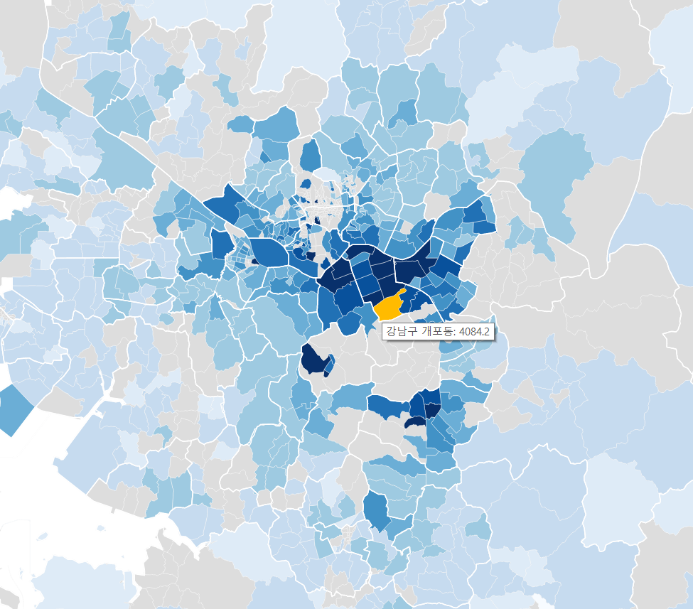

얼마 전 내 집을 장만했는데 그 과정에서 국토교통부에서 주택 실거래가를 공개하고 있다는 것을 알게 되었다. 개발자로서 정부 3.0이라든지 공공 데이터 개방에 대해 관심이 많이 있었는데 이 주택 실거래 사이트는 데이터 개방, 활용 측면에서 도저히 봐줄 사이트가 안돼 보였다. 왜 데이터를 이렇게 찾기 어렵고 받아갈 수도 없게 만들었냐고!
결국 내가 직접 의미 있는 아파트 실거래가 분석을 해보기로 하고 여기 일부를 공개한다. 이 과정에서 데이터를 뽑아 오기 위한 리버스 엔지니어링이라든가(이건 개방형 데이터가 아니잖소!) 다양한 오픈 소스 소프트웨어 사용, 시행착오, 시간 투자가 있었음을 밝힌다. 이 과정이나 좀더 다양한 분석 데이터는 앞으로 차츰 올려보기로 하겠다.
우선 전국적인 아파트 매매가 현황이다. 물론 수도권이 비싼 줄 알고 있지만 다른 지역은 어떤지도 궁금했다. 2014년 5, 6, 7월달의 매매에 대해 시군구별로 단위 면적 당 매매가를 비싼 곳은 진하게 싼 곳은 연하게 표시해봤다.

역시나 수도권이 진하게 나오는 것이 비싼 지역이라는 것을 한 번에 알 수 있다. 아래는 그 중 상위 10개의 시군구 데이터다. “강남 불패” 신화는 여전한 것인가?
| 시군구 | 매매건수 | 3.3m²당 가격 |
|---|---|---|
| 서울특별시 강남구 | 775 | 2865.0 |
| 서울특별시 서초구 | 562 | 2563.5 |
| 경기도 과천시 | 55 | 2528.7 |
| 서울특별시 송파구 | 520 | 2324.4 |
| 서울특별시 용산구 | 159 | 2127.6 |
| 서울특별시 광진구 | 204 | 1912.2 |
| 경기도 성남시 분당구 | 747 | 1799.1 |
| 서울특별시 마포구 | 313 | 1791.6 |
| 서울특별시 성동구 | 379 | 1786.2 |
| 서울특별시 종로구 | 84 | 1746.3 |
이번엔 수도권을 동 단위까지 분석해봤다. 역시 2014년 5, 6, 7월달 데이터를 평균한 것이다.

일부러 최고 비싼 지역인 개포동을 별도로 보이게 했다. 비싸도 저렇게 비쌀 줄은 몰랐다. 특히 개포동 주공 아파트가 44m2 이런 면적이 7~8억에 매매돼서 이렇게 평균이 올라간 것이다. 다음은 데이터 표다.
| 동 | 매매건수 | 3.3m²당 가격 |
|---|---|---|
| 서울특별시 강남구 개포동 | 124 | 4084.2 |
| 서울특별시 강남구 압구정동 | 45 | 4037.2 |
| 서울특별시 서초구 반포동 | 94 | 3656.0 |
| 서울특별시 송파구 잠실동 | 94 | 3624.8 |
| 서울특별시 중구 회현동1가 | 1 | 3579.5 |
| 서울특별시 강남구 도곡동 | 86 | 3532.9 |
| 서울특별시 강남구 청담동 | 48 | 3420.2 |
| 경기도 과천시 중앙동 | 7 | 3410.7 |
| 서울특별시 용산구 용산동5가 | 1 | 3384.0 |
| 서울특별시 강남구 대치동 | 107 | 3262.0 |
좀더 다양한 분석은 시간을 두고 진행해야 할 것 같다. 특히 대부분의 사람들이 생각하는 생활권은 “행정동” 단위로 이루어지는데 주택 매매 계약은 “법정동” 단위로 이루어지기 때문에 위 분석도 법정동을 기준으로 할 수 밖에 없었다. 예를 들어 서울 봉천동은 현재 행정구역상에서는 없어졌지만 법정동으로는 계속 존재하므로 봉천동에 대해서 분석하게 된다.
일단은 여기까지 오는데도 너무나 힘들었다. 특히 데이터를 뽑는 과정이 너무 원시적이었다. 그래도 결과는 내가 생각했을 때 어느 정도 생각한 대로 보기 좋게 나와 기분이 좋다. Mike Bostock의 d3.js에 정말 감사드린다.
댓글
댓글을 불러오는 중입니다.